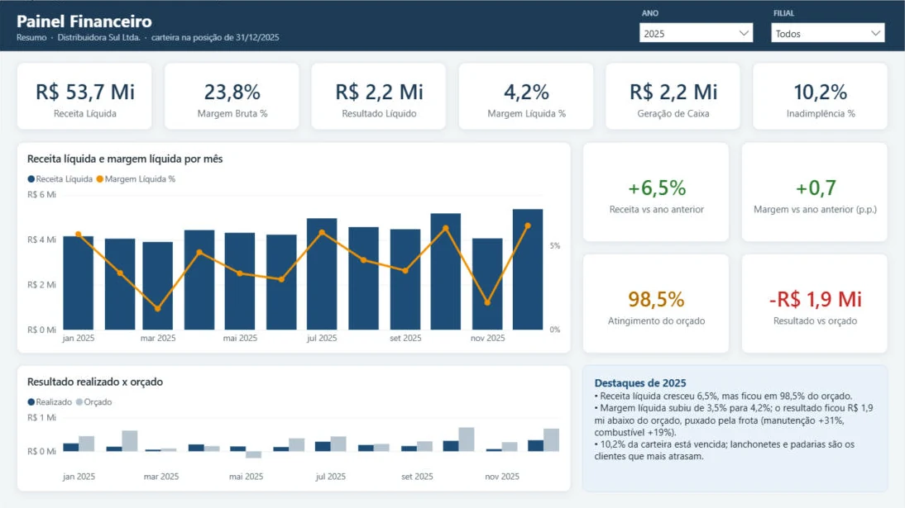
Painel Financeiro
DRE, orçado × realizado, contas a receber e fluxo de caixa.
- Resultado R$ 1,9 mi abaixo do orçado, puxado pela frota
- 10,2% da carteira vencida, concentrada nos pequenos clientes
Analista de Dados & BI · Porto Alegre
Power BI · SQL Server · Python · Excel e Power Query
Todos os projetos usam a mesma empresa: a Distribuidora Sul Ltda., uma distribuidora fictícia de alimentos e bebidas do RS com dois anos de operação, R$ 121 milhões em vendas, 171 funcionários no histórico e 90 produtos. Os dados foram gerados por código, com os problemas de qualidade do mundo real.

DRE, orçado × realizado, contas a receber e fluxo de caixa.
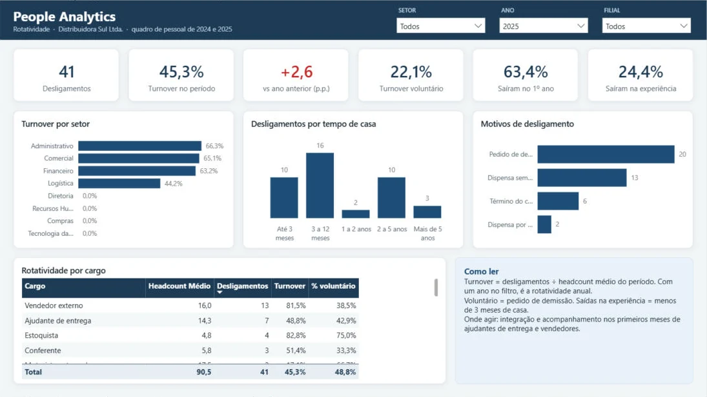
Headcount, rotatividade, absenteísmo e horas extras.
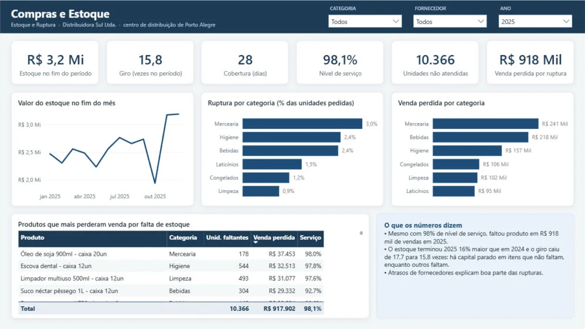
Pontualidade de fornecedores, giro, ruptura e curva ABC.
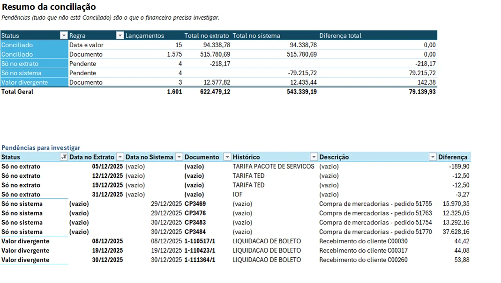
Consolidação do ponto e conciliação bancária com Power Query.
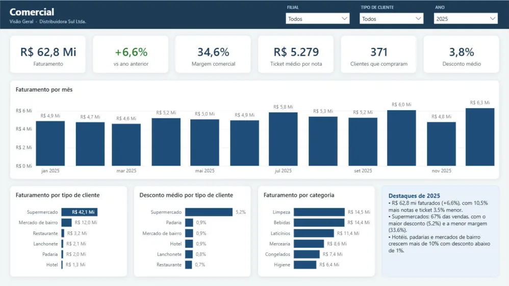
Faturamento, vendedores, concentração e clientes que pararam de comprar.
A fundação de todos os painéis: ETL em Python e modelo estrela no SQL Server.
Exportações do ERP e planilhas das áreas, com duplicidades, datas em dois formatos e layouts que mudam no meio do ano.
ETL com pandas: limpeza, padronização e um relatório do que foi corrigido a cada execução.
Modelo estrela, carga dentro de uma transação e testes automáticos antes de liberar os números.
Painéis e automações conferidos número a número contra uma consulta SQL independente.
Projeto 1
A diretoria precisava ver, num lugar só, se a empresa cresce com lucro, onde o realizado fugiu do orçamento, quem está devendo e se o caixa acompanha o resultado.
USERELATIONSHIP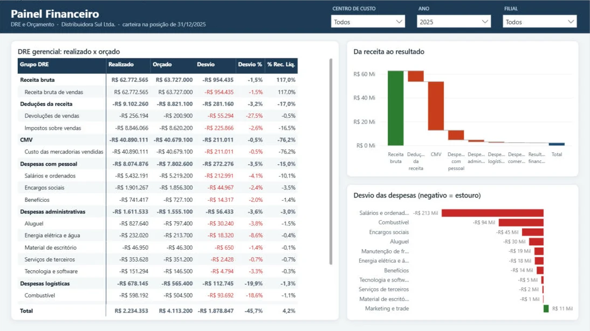
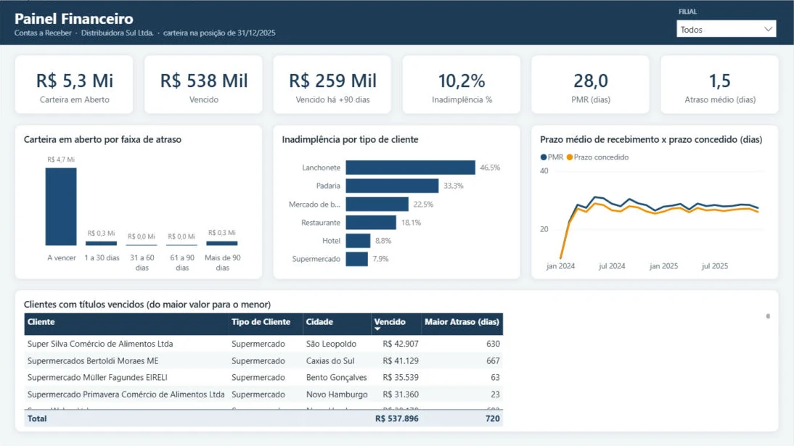
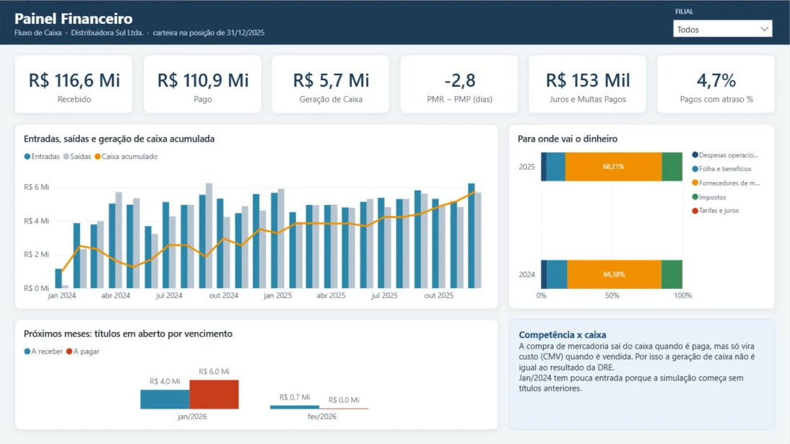
Projeto 2
O RH sentia que perdia gente demais, mas não sabia onde, por quê nem em que momento. As faltas e as horas extras eram fechadas à mão, mês a mês.
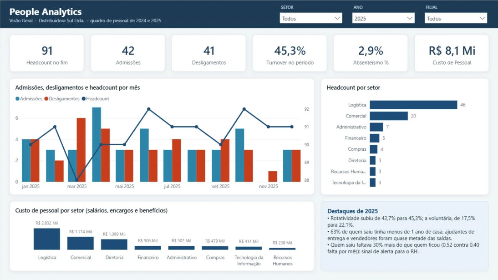
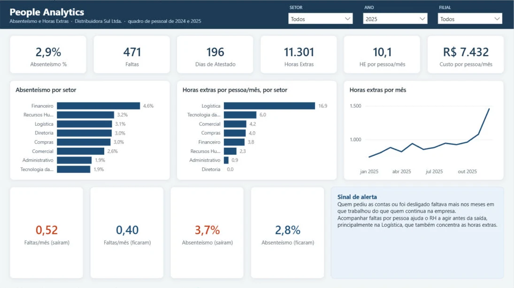
Projeto 3
Faltava produto para vender e, ao mesmo tempo, o estoque crescia. Compras queria saber quais fornecedores atrasam e quais itens não podem faltar.
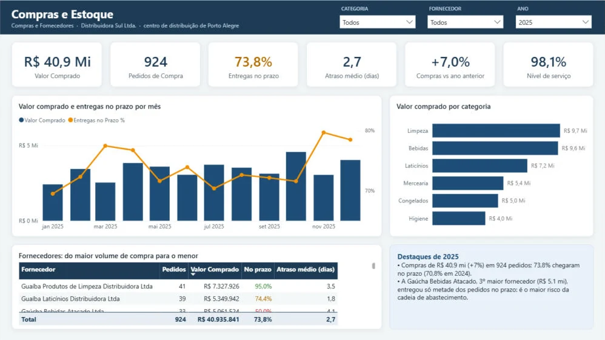
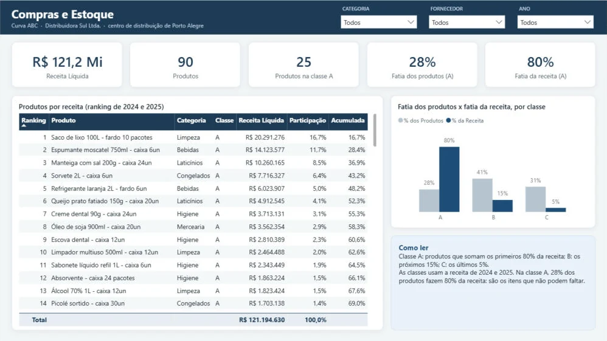
Projeto 4
Duas rotinas de fechamento tomavam horas: juntar 24 planilhas de ponto com o layout mudando no meio do ano, e conferir o extrato do banco contra o sistema linha a linha.
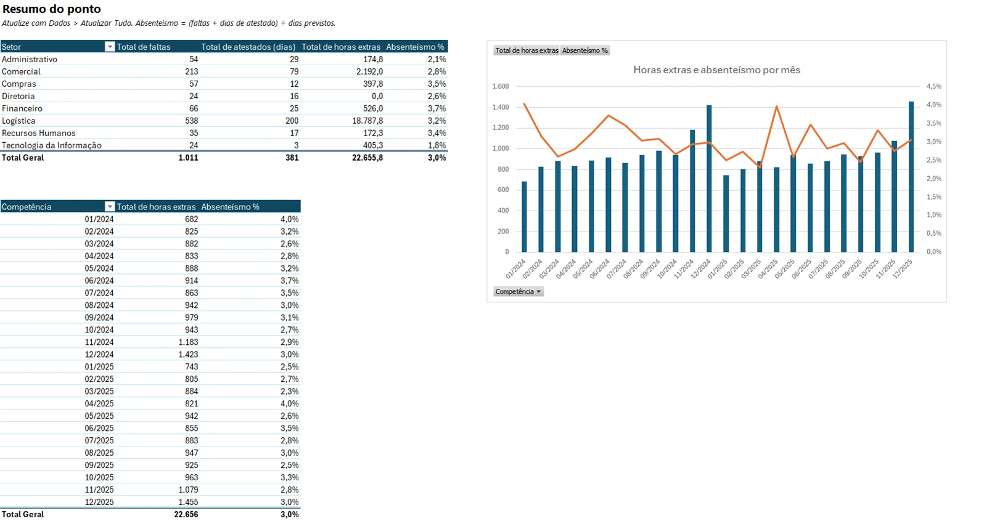
Projeto 5
A diretoria via o faturamento crescer, mas não sabia se a carteira de clientes acompanhava, quanto o desconto custava em margem nem quem tinha parado de comprar.
SAMEPERIODLASTYEAR + EXCEPT) e concentração nos 20% maiores (TOPN)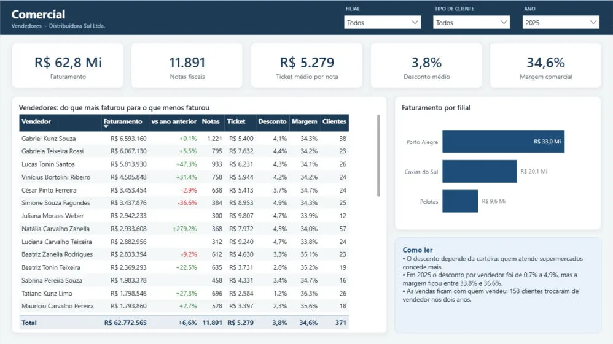
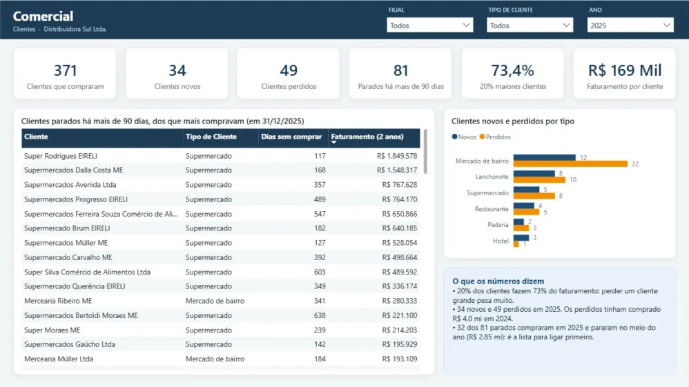
Projeto 0
Painel bom começa com dado confiável. Os arquivos chegam dos sistemas com duplicidades, cadastros repetidos, datas em dois formatos e números como texto.
Sou analista de Power BI em Porto Alegre. Antes dos dados, trabalhei com logística e atendimento: coordenei operação de logística e relacionamento com clientes, e isso me ensinou a olhar o indicador pelo lado de quem precisa decidir.
Hoje uso SQL, Python e Power BI para planejar, coletar e modelar dados e construir indicadores e relatórios de gestão. Tenho inglês avançado e curso Ciência da Computação na BYU-Idaho.
Busco vagas de Analista de Dados / BI em Porto Alegre (presencial ou híbrido) ou remotas.